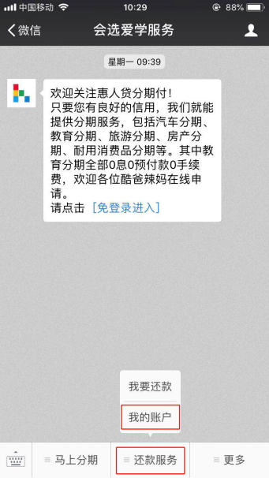
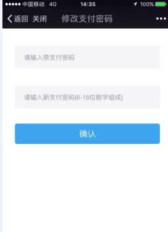
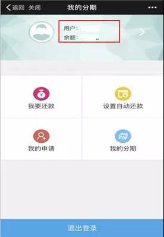
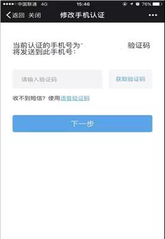
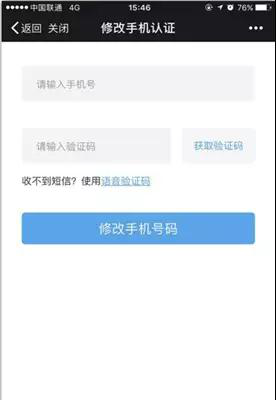

如果客户申请时的手机号码还在使用，请按以下操作流程操作：
1.关注微信公众号“会选爱学服务”,关注后点击下面的“还款服务”，选“我的账户”。输入用户名/手机号/进行登陆（初始密码我们会以短信的形式发送到客户手机上）；


2.点击用户名，进入到账户设置页面，点击“修改手机认证”；

3.系统会给原认证手机号发送一条短信验证码，输入验证码，点击下一步；

4.输入新的手机号并验证，点击“修改手机号码”就可以了；

如果客户申请时的手机号码不再使用了，请将以下信息发送至客服邮箱：KF@huirendai.com
1、您的用户名 （例：zhangsan123）
2、您需要（修改后的手机号码） （例：13912345678）
3、注册在惠人贷的手机号码、邮箱。（例：13912345678 123456789@qq.com）
4、身份证证件号、真实姓名、籍贯。（例：195512191424、张三、河北省涿州市）
5、注册时间。（我的惠人贷-交易记录查看） （例：2014年6月4号）
6、是否有过投资，如有投资，最后一笔提现金额及时间，最后一笔投资时间及金额 以上两项可在【我的惠人贷】-【资金管理】-【交易记录】中查看。
7、修改手机号码原因？